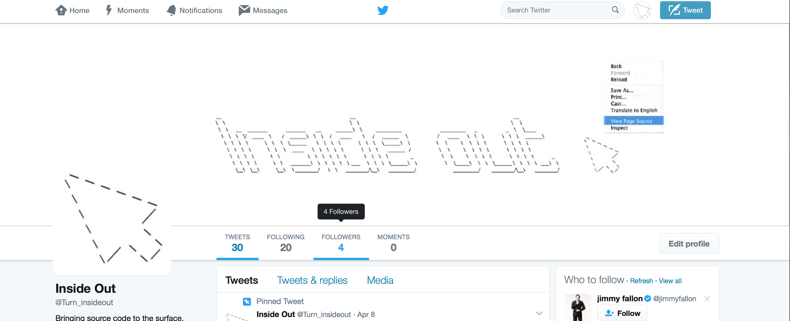
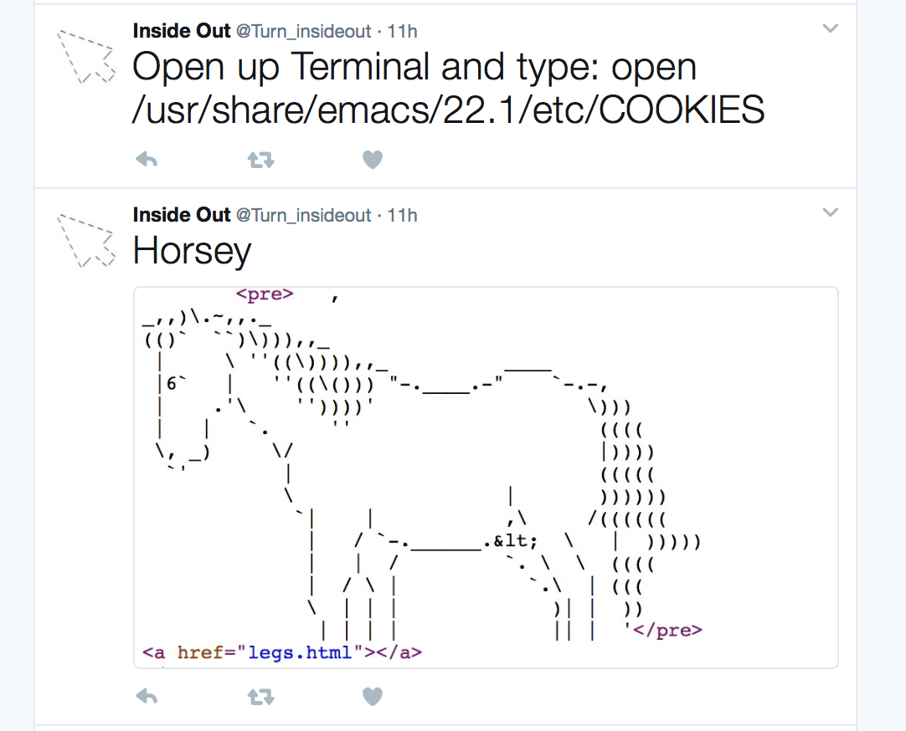
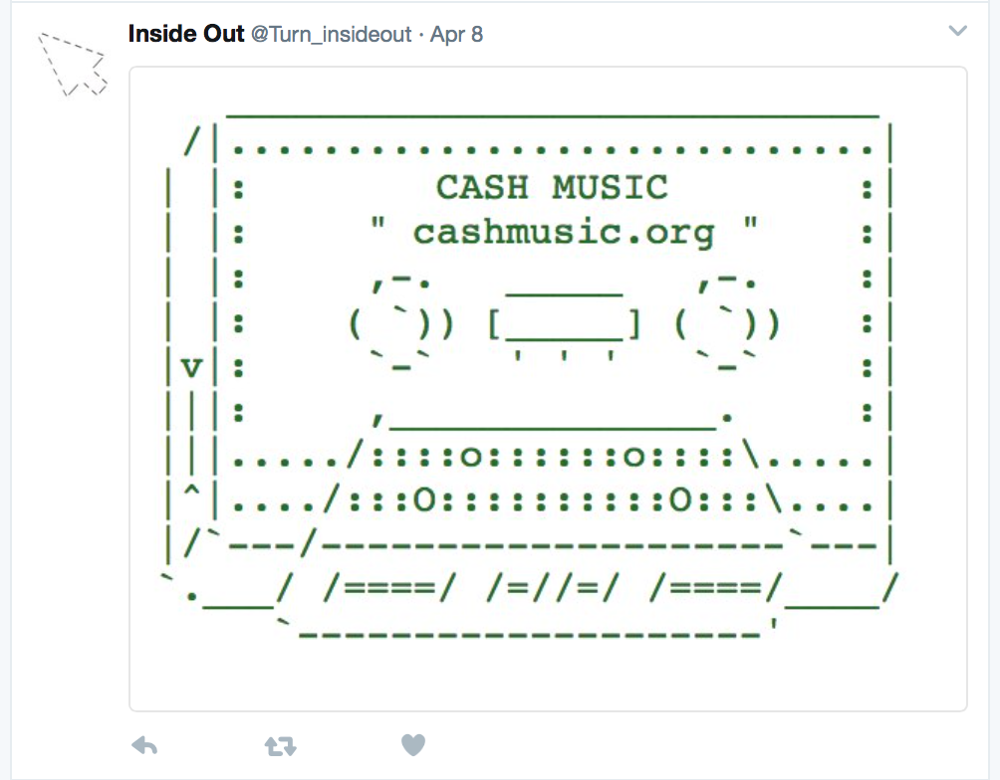
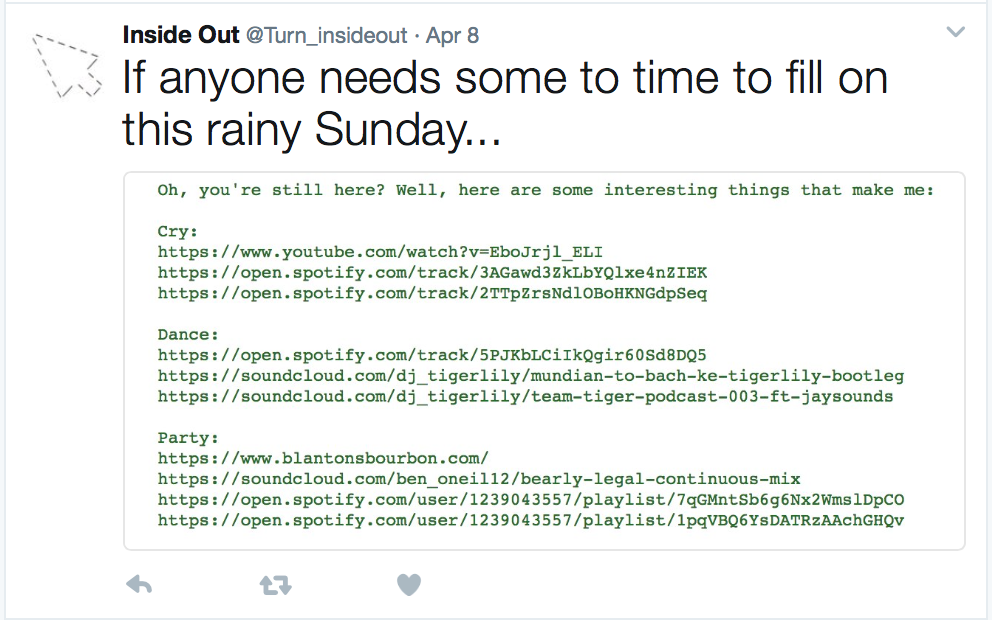
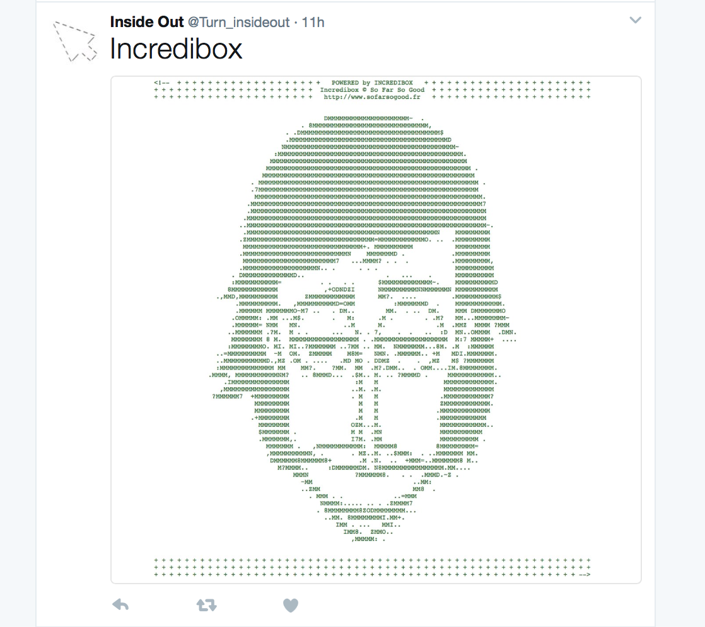
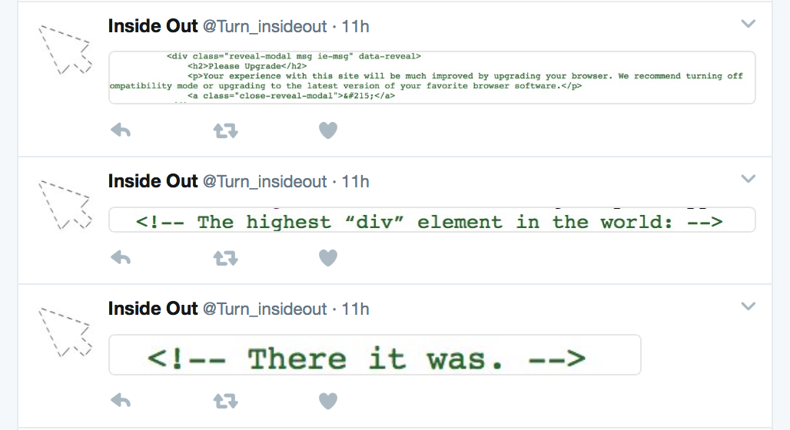
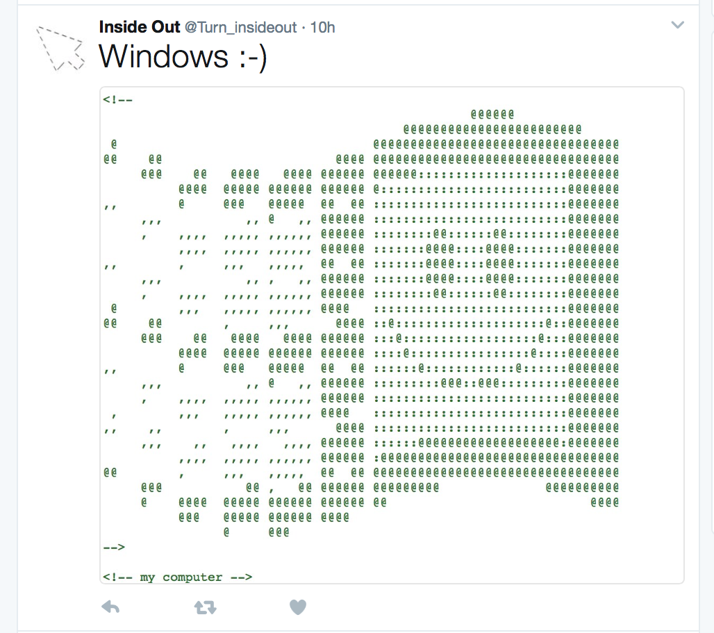

A Box of Nothing is a conceptual text challenging what defines an object as
an artwork.
Flipping this idea, this twitter page uncovers hidden source code messages and posts it on a twitter account named "Inside Out".
The page art is made mostly from html code. View Page Source.
The posts range from small computer hacks that we didn't know existed, source code art, coder messages and even career prospects.
Click the above twitter box to view the offical Inside Out page.







Text Source